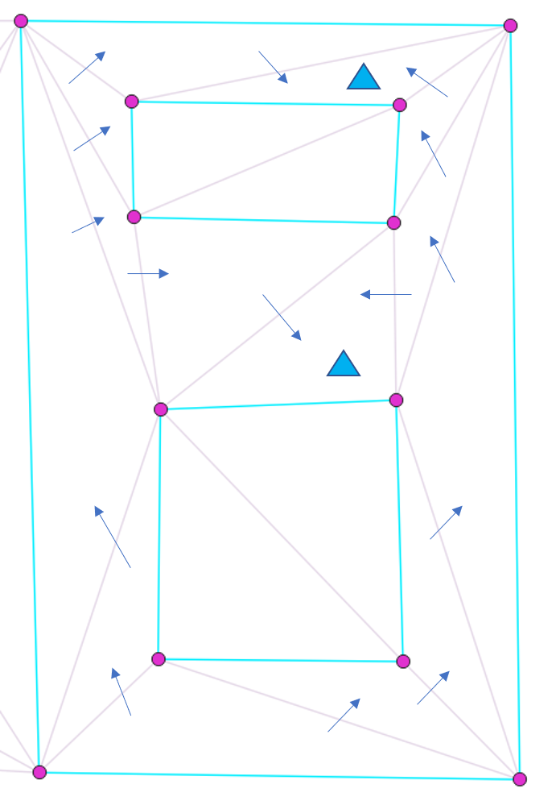
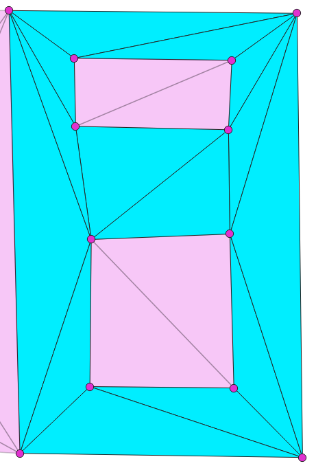

Avoid multiple processing when using BFS to traverse a constrained triangulation
The BFS algorithm is a well-known algorithm for expanding within limited boundaries, such as traversing all faces inside a polygon in a constrained triangulation. However, it's important to note that during a BFS traversal, there's a possibility that unprocessed faces may be added to the queue more than once. To avoid this issue, it's recommended to check if an element has already been processed before processing the front element of the queue.
An example is shown as below:

Starting from the bottom face, the rule is to not cross any constrained edges, and each face can only be processed once. And after the BFS traversal, there are two faces (with blue triangle marked) which have been added to the queue twice. To address this issue, a potential solution is to check whether the current face has already been processed. If it hasn't, then it can be processed.
Pseudo code for an example
queue to store faces; // for BFS
add starting face to the queue;
while (queue is not empty)
{
currentFace = queue.front();
if (current face has not been processed yet) { // if not yet been processed, process it
process it;
mark it as processed;
}
queue.pop(); // pop the current face from the queue
// Add all possible finite neighbours - not crossing constrained edges and not yet processed
for (int i = 0; i < 3; ++i) {
neighborFace = currentFace->neighbor(i);
if (neighborFace is a finite face) { // only add finite neighbors
commonEdge = common edge of (currentFace, neighborFace);
if (commonEdge is not constrained && neighborFace has not been processed yet) {
add the neighborFace to the queue
}
}
} // end for: all neighbors (including infinite neighbors)
}The processed faces are shown below (highlighted in cyan)
